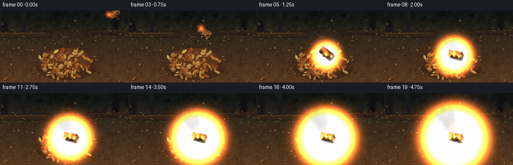
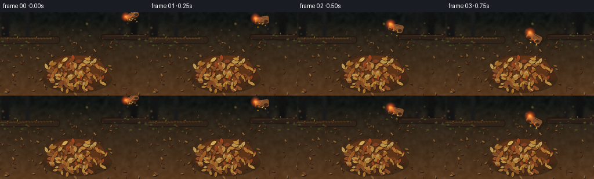
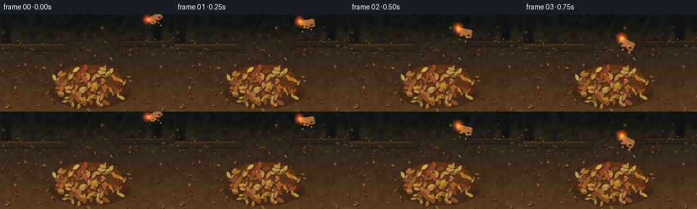
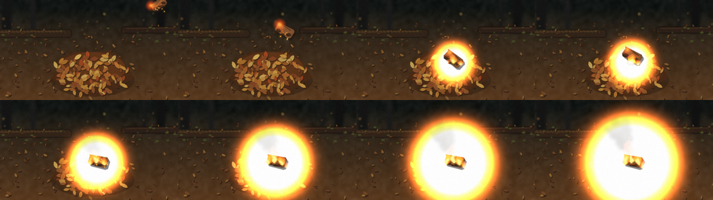
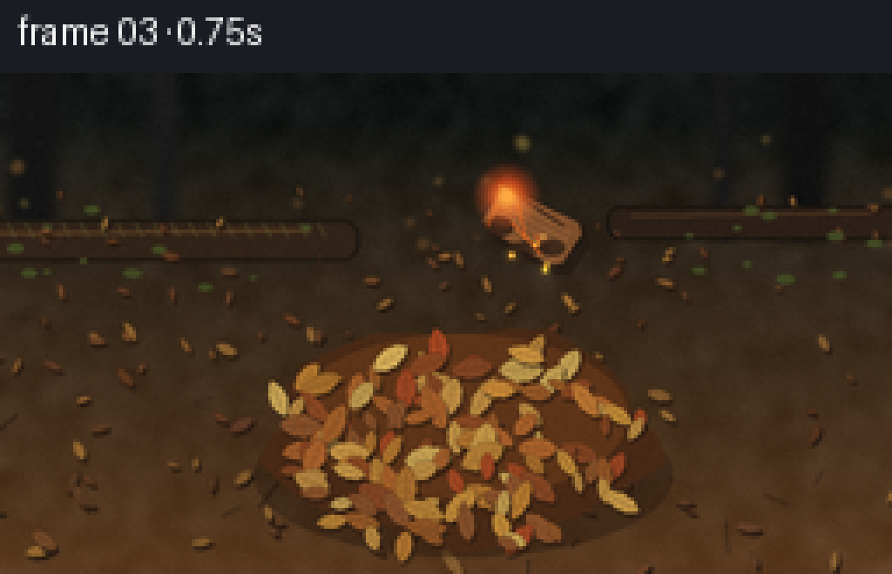
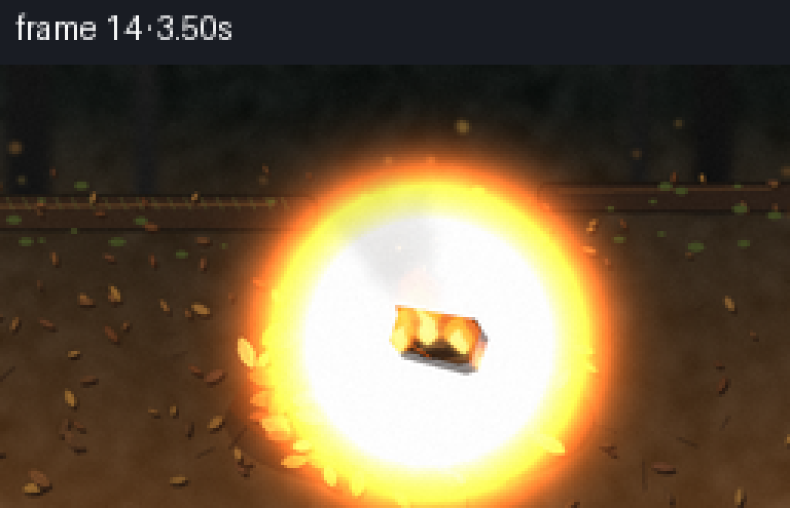
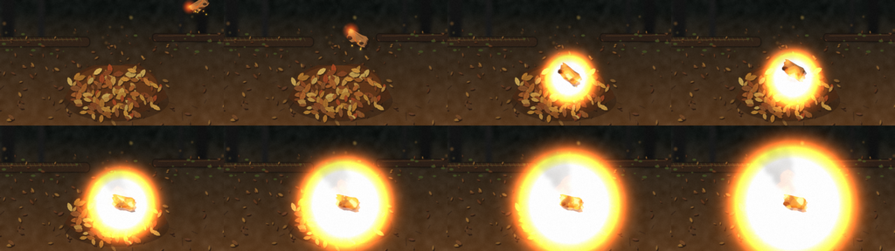

CODING AGENTS AS PIXEL WORLD MODELS
traex/DeepSeek-V4.1-Flash · material_0025
点击播放 · 原生 RGB 像素
逐轮保存的候选
回放视频、检查图与代码变化。
每份候选均可单独播放。实际图片检查记录在下方工具轨迹中。
候选 01播放与检查图
点击播放 · 原生 RGB 像素


展开代码变化
--- 上一保存版本
+++ 本次保存版本
@@ -0,0 +1,505 @@
+from pathlib import Path
+import math
+
+import numpy as np
+from PIL import Image, ImageChops, ImageDraw, ImageFilter
+
+from artifact_io import save
+
+
+W, H = 256, 144
+S = 4
+FW, FH = W * S, H * S
+N = 20
+FPS = 4.0
+CASE_DIR = Path(__file__).resolve().parent
+RNG = np.random.default_rng(11082026)
+
+
+def p(value):
+ return int(round(value * S))
+
+
+def rgb(value):
+ if isinstance(value, str):
+ value = value.lstrip("#")
+ return tuple(int(value[i : i + 2], 16) for i in (0, 2, 4))
+ return tuple(int(max(0, min(255, c))) for c in value)
+
+
+def mix(a, b, t):
+ a, b = rgb(a), rgb(b)
+ return tuple(int(round(a[i] * (1 - t) + b[i] * t)) for i in range(3))
+
+
+def darken(color, amount):
+ return tuple(int(c * (1 - amount)) for c in rgb(color))
+
+
+def lighten(color, amount):
+ return tuple(int(c + (255 - c) * amount) for c in rgb(color))
+
+
+def transformed(points, cx, cy, angle, scale=1.0):
+ ca, sa = math.cos(angle), math.sin(angle)
+ out = []
+ for x, y in points:
+ x, y = x * scale, y * scale
+ out.append(((cx + x * ca - y * sa) * S, (cy + x * sa + y * ca) * S))
+ return out
+
+
+def leaf_polygon(length, width, seed):
+ rng = np.random.default_rng(seed)
+ ts = np.linspace(-0.5, 0.5, 13)
+ envelope = np.power(np.maximum(0, np.cos(np.pi * ts)), 0.68)
+ serration = 1.0 + 0.07 * np.sin(np.linspace(0, 7 * np.pi, len(ts)) + rng.uniform(0, 6.28))
+ top = [(float(t * length), float(-width * 0.5 * e * s)) for t, e, s in zip(ts, envelope, serration)]
+ bottom = [(float(t * length), float(width * 0.5 * e * s)) for t, e, s in zip(ts[::-1], envelope[::-1], serration[::-1])]
+ return top + bottom
+
+
+def draw_leaf(draw, x, y, length, width, angle, color, seed, shadow=True, detail=True):
+ poly = transformed(leaf_polygon(length, width, seed), x, y, angle)
+ if shadow:
+ sh = transformed(leaf_polygon(length, width, seed), x + 0.8, y + 1.2, angle)
+ draw.polygon(sh, fill=(42, 27, 18, 130))
+ draw.polygon(poly, fill=rgb(color), outline=darken(color, 0.34))
+ if detail and length > 5:
+ ca, sa = math.cos(angle), math.sin(angle)
+ x1 = (x - ca * length * 0.43) * S
+ y1 = (y - sa * length * 0.43) * S
+ x2 = (x + ca * length * 0.43) * S
+ y2 = (y + sa * length * 0.43) * S
+ draw.line((x1, y1, x2, y2), fill=darken(color, 0.25), width=max(1, p(0.32)))
+ for side in (-1, 1):
+ for k in (-0.20, 0.02, 0.22):
+ bx, by = x + ca * length * k, y + sa * length * k
+ ex = bx - sa * side * width * 0.30 + ca * length * 0.10
+ ey = by + ca * side * width * 0.30 + sa * length * 0.10
+ draw.line((bx * S, by * S, ex * S, ey * S), fill=darken(color, 0.18), width=max(1, p(0.22)))
+
+
+def add_noise(image, sigma=8, blur=1.3, seed=0):
+ arr = np.asarray(image).astype(np.float32)
+ rng = np.random.default_rng(seed)
+ noise = rng.normal(0, sigma, arr.shape[:2])
+ noise = np.asarray(Image.fromarray(((noise + 128).clip(0, 255)).astype(np.uint8)).filter(ImageFilter.GaussianBlur(blur)))
+ noise = (noise.astype(np.float32) - 128) * 1.8
+ arr = np.clip(arr + noise[:, :, None], 0, 255).astype(np.uint8)
+ return Image.fromarray(arr, "RGB")
+
+
+def make_background():
+ yy, xx = np.mgrid[0:FH, 0:FW].astype(np.float32)
+ yn = yy / FH
+ top = np.array([18, 22, 20], dtype=np.float32)
+ middle = np.array([45, 37, 27], dtype=np.float32)
+ bottom = np.array([91, 59, 32], dtype=np.float32)
+ t1 = np.clip((yn - 0.08) / 0.22, 0, 1)[:, :, None]
+ t2 = np.clip((yn - 0.30) / 0.70, 0, 1)[:, :, None]
+ arr = top * (1 - t1) + middle * t1
+ arr = arr * (1 - t2) + bottom * t2
+
+ rng = np.random.default_rng(88)
+ coarse = rng.normal(0, 1, (FH // 8, FW // 8))
+ coarse = np.asarray(Image.fromarray(((coarse * 32 + 128).clip(0, 255)).astype(np.uint8)).resize((FW, FH), Image.Resampling.BICUBIC).filter(ImageFilter.GaussianBlur(6)))
+ arr += (coarse.astype(np.float32)[:, :, None] - 128) * 0.30
+ fine = rng.normal(0, 8, (FH, FW, 1))
+ arr = np.clip(arr + fine, 0, 255).astype(np.uint8)
+ bg = Image.fromarray(arr, "RGB").convert("RGBA")
+ draw = ImageDraw.Draw(bg, "RGBA")
+
+ # Deep, out-of-focus forest behind the floor.
+ for x, trunk_width, tone in [(9, 14, 20), (47, 7, 27), (231, 12, 17), (207, 5, 25)]:
+ draw.rectangle((p(x - trunk_width / 2), 0, p(x + trunk_width / 2), p(48)), fill=(tone, tone, tone, 255))
+ bg = bg.filter(ImageFilter.GaussianBlur(p(1.7)))
+ draw = ImageDraw.Draw(bg, "RGBA")
+
+ # Soft late-afternoon bokeh in the distant litter.
+ for _ in range(18):
+ x, y = RNG.uniform(0, W), RNG.uniform(18, 54)
+ r = RNG.uniform(0.7, 2.2)
+ c = RNG.choice([(132, 97, 47), (98, 84, 44), (83, 60, 34)])
+ draw.ellipse((p(x - r), p(y - r), p(x + r), p(y + r)), fill=(*c, RNG.integers(45, 95)))
+ bg = bg.filter(ImageFilter.GaussianBlur(p(0.75)))
+ draw = ImageDraw.Draw(bg, "RGBA")
+
+ # Two old fallen branches establish scale and depth.
+ draw.rounded_rectangle((p(-15), p(42), p(103), p(54)), radius=p(5), fill=(51, 36, 25, 255), outline=(28, 24, 18, 255), width=p(1))
+ draw.line((p(-5), p(46), p(89), p(45)), fill=(100, 67, 37, 180), width=p(1.1))
+ for x in np.linspace(2, 91, 18):
+ draw.line((p(x), p(43), p(x + 2), p(47)), fill=(87, 91, 45, 110), width=p(0.5))
+ draw.rounded_rectangle((p(174), p(38), p(268), p(48)), radius=p(4), fill=(45, 32, 24, 255), outline=(26, 21, 16, 255), width=p(1))
+ draw.line((p(181), p(41), p(252), p(40)), fill=(92, 61, 35, 150), width=p(0.8))
+
+ # Loose litter outside the central pile.
+ litter_colors = ["#6f4727", "#80502a", "#9b6631", "#a57438", "#6d3f22", "#b07a36", "#71452b"]
+ for i in range(138):
+ y = RNG.uniform(34, 143)
+ perspective = 0.45 + 0.62 * ((y - 34) / 109)
+ x = RNG.uniform(-4, W + 4)
+ length = RNG.uniform(3.6, 9.5) * perspective
+ width = length * RNG.uniform(0.30, 0.48)
+ angle = RNG.uniform(-math.pi, math.pi)
+ color = mix(RNG.choice(litter_colors), "#3f2c20", RNG.uniform(0.10, 0.42))
+ draw_leaf(draw, x, y, length, width, angle, color, 500 + i, shadow=True, detail=length > 5.5)
+
+ # Small twigs break up the litter pattern.
+ for _ in range(28):
+ x, y = RNG.uniform(0, W), RNG.uniform(43, 140)
+ length = RNG.uniform(3, 13)
+ angle = RNG.uniform(-math.pi, math.pi)
+ dx, dy = math.cos(angle) * length, math.sin(angle) * length
+ draw.line((p(x), p(y), p(x + dx), p(y + dy)), fill=(52, 35, 23, 190), width=p(RNG.uniform(0.35, 0.75)))
+
+ # Moss patches near the background.
+ for _ in range(24):
+ x, y = RNG.uniform(0, W), RNG.uniform(36, 62)
+ r = RNG.uniform(1, 3)
+ draw.ellipse((p(x - r), p(y - r * 0.5), p(x + r), p(y + r * 0.5)), fill=(66, 74, 35, RNG.integers(55, 100)))
+
+ bg = bg.convert("RGB").filter(ImageFilter.GaussianBlur(p(0.16)))
+ return bg
+
+
+BACKGROUND = make_background()
+
+
+def make_pile():
+ leaves = []
+ rng = np.random.default_rng(90210)
+ palette = ["#b77a2f", "#c18a38", "#9e5e28", "#8c4923", "#d0a04a", "#b0652c", "#d1ad58", "#8e552c", "#a84923", "#c79545"]
+ for i in range(124):
+ # A flattened mound, with more leaf mass near the front lip.
+ r = math.sqrt(rng.random())
+ theta = rng.uniform(0, math.tau)
+ x = 132 + math.cos(theta) * 54 * r + rng.normal(0, 2.0)
+ y = 103 + math.sin(theta) * 30 * r + (r ** 2) * 5 + rng.normal(0, 1.5)
+ if y < 76:
+ y = 76 + (76 - y) * 0.35
+ length = rng.uniform(7.0, 15.0) * (1.0 - 0.18 * r)
+ width = length * rng.uniform(0.38, 0.56)
+ angle = rng.uniform(-math.pi, math.pi)
+ color = palette[int(rng.integers(0, len(palette)))]
+ color = mix(color, "#5b3521", rng.uniform(0.02, 0.22))
+ leaves.append({
+ "x": x, "y": y, "length": length, "width": width,
+ "angle": angle, "color": color, "seed": 1000 + i,
+ "dist": math.hypot((x - 140) / 1.0, (y - 89) / 0.8),
+ "ignite": 7.5 + math.hypot((x - 140) / 1.0, (y - 90) / 0.75) * 0.105 + rng.uniform(0, 2.2),
+ "lift": rng.uniform(0, 1),
+ })
+ leaves.sort(key=lambda d: d["y"])
+ return leaves
+
+
+PILE = make_pile()
+
+
+def draw_pile(draw, frame):
+ # Cast shadow and the dark, compressed interior of the pile.
+ draw.ellipse((p(73), p(92), p(193), p(139)), fill=(40, 25, 16, 105))
+ mound = []
+ for a in np.linspace(0, math.tau, 28, endpoint=False):
+ wobble = 1 + 0.07 * math.sin(a * 5 + 0.4) + 0.04 * math.sin(a * 9)
+ mound.append((p(132 + math.cos(a) * 55 * wobble), p(104 + math.sin(a) * 31 * wobble)))
+ draw.polygon(mound, fill=(73, 42, 22, 255))
+ draw.ellipse((p(84), p(75), p(180), p(122)), fill=(94, 53, 25, 255))
+
+ for leaf in PILE:
+ color = leaf["color"]
+ if frame >= leaf["ignite"]:
+ burn = min(1.0, (frame - leaf["ignite"]) / 8.0)
+ color = mix(color, "#231912", 0.60 * burn)
+ if frame < leaf["ignite"] + 2.6:
+ color = mix(color, "#db5a20", 0.45)
+ x, y, angle = leaf["x"], leaf["y"], leaf["angle"]
+ if 5 <= frame <= 8 and leaf["dist"] < 30:
+ impact = max(0, 1 - abs(frame - 6.5) / 2.5)
+ radial = max(0.01, leaf["dist"])
+ dx = (x - 139) / radial * 5.5 * impact
+ dy = (y - 91) / radial * 3.3 * impact - 3.2 * impact
+ x += dx
+ y += dy
+ angle += 0.7 * impact * (1 if leaf["seed"] % 2 else -1)
+ draw_leaf(draw, x, y, leaf["length"], leaf["width"], angle, color, leaf["seed"], shadow=True, detail=True)
+
+ # A few curling, pale leaves on the crown make the silhouette readable.
+ for i, (x, y, length, width, angle, col) in enumerate([
+ (112, 82, 12, 5.5, -0.62, "#d5ad58"),
+ (151, 81, 11, 4.8, 0.28, "#c9903d"),
+ (168, 94, 12, 5.0, 0.92, "#b97432"),
+ (96, 101, 13, 5.8, -1.08, "#9f5d28"),
+ (143, 91, 10, 4.6, 0.08, "#c98937"),
+ ]):
+ draw_leaf(draw, x, y, length, width, angle, col, 3000 + i, shadow=True, detail=True)
+
+
+def board_pose(frame):
+ if frame <= 5:
+ u = frame / 5.0
+ e = 1 - (1 - u) ** 2.05
+ x = 228 - 89 * e
+ y = 6 + 79 * (u ** 1.42)
+ angle = math.radians(-34 + 72 * e)
+ scale = 0.88 + 0.15 * e
+ else:
+ u = min(1.0, (frame - 5) / 3.0)
+ x = 139 + 2.0 * u
+ bounce = math.sin(min(1.0, (frame - 5) / 3.0) * math.pi) * 7.0
+ y = 85 + 3.0 * u - bounce
+ angle = math.radians(38 - 26 * u)
+ scale = 1.03
+ return x, y, angle, scale
+
+
+def draw_board(draw, x, y, angle, scale, frame):
+ length, width = 27.0, 14.5
+ base_points = [
+ (-0.52, -0.46), (0.42, -0.51), (0.51, -0.34), (0.47, 0.38),
+ (0.35, 0.50), (-0.40, 0.45), (-0.50, 0.31), (-0.47, -0.29),
+ ]
+ pts = transformed([(px * length, py * width) for px, py in base_points], x, y, angle, scale)
+ shadow_pts = transformed([(px * length, py * width) for px, py in base_points], x + 2.2, y + 3.2, angle, scale)
+ draw.polygon(shadow_pts, fill=(30, 21, 17, 135))
+ board_color = "#80502d" if frame < 11 else "#674328"
+ draw.polygon(pts, fill=rgb(board_color), outline=(45, 29, 19))
+
+ ca, sa = math.cos(angle), math.sin(angle)
+ # Corrugation and a lighter paper skin.
+ for fy in (-0.27, -0.12, 0.04, 0.20, 0.34):
+ local = [(-0.42 * length, fy * width), (0.40 * length, (fy + 0.015) * width)]
+ line = transformed(local, x, y, angle, scale)
+ draw.line((line[0][0], line[0][1], line[1][0], line[1][1]), fill=(185, 121, 64, 145), width=max(1, p(0.48)))
+ crease = transformed([(-0.35 * length, -0.44 * width), (0.30 * length, -0.30 * width)], x, y, angle, scale)
+ draw.line((crease[0][0], crease[0][1], crease[1][0], crease[1][1]), fill=(55, 35, 23, 210), width=p(0.7))
+
+ # Charred bites and glowing cracks.
+ for cx, cy, rx, ry, c in [(-0.31, 0.28, 0.16, 0.19, (47, 31, 22)), (0.28, 0.18, 0.14, 0.16, (55, 36, 24)), (0.07, 0.37, 0.22, 0.11, (51, 33, 22))]:
+ ex = x + (cx * length * ca - cy * width * sa) * scale
+ ey = y + (cx * length * sa + cy * width * ca) * scale
+ draw.ellipse((p(ex - rx * length * scale), p(ey - ry * width * scale), p(ex + rx * length * scale), p(ey + ry * width * scale)), fill=(*c, 220))
+ for i in range(4):
+ a = transformed([((RNG.random() - 0.5) * length, (RNG.random() - 0.5) * width), ((RNG.random() - 0.5) * length, (RNG.random() - 0.5) * width)], x, y, angle, scale)
+ draw.line((a[0][0], a[0][1], a[1][0], a[1][1]), fill=(255, 104, 27, 220), width=p(0.55))
+
+ # The lower-left torn edge is actively burning.
+ burn_center = (x - 10.5 * ca + 4.8 * sa, y - 10.5 * sa - 4.8 * ca)
+ glow = Image.new("RGB", (FW, FH), (0, 0, 0))
+ gd = ImageDraw.Draw(glow)
+ for r, col in [(8.5, (76, 19, 4)), (5.5, (180, 45, 7)), (2.8, (255, 132, 26))]:
+ rr = r * scale
+ gd.ellipse((p(burn_center[0] - rr), p(burn_center[1] - rr), p(burn_center[0] + rr), p(burn_center[1] + rr)), fill=col)
+ return glow
+
+
+def radial_light(base, cx, cy, radius, strength, color=(255, 111, 34)):
+ arr = np.asarray(base).astype(np.float32)
+ yy, xx = np.mgrid[0:FH, 0:FW]
+ d2 = ((xx / S - cx) ** 2 + (yy / S - cy) ** 2) / max(1.0, radius ** 2)
+ weight = np.exp(-d2 * 2.7)[:, :, None] * strength
+ c = np.array(color, dtype=np.float32)
+ lit = arr * (1 - weight * 0.10) + c * weight
+ return Image.fromarray(np.clip(lit, 0, 255).astype(np.uint8), "RGB")
+
+
+def screen_layer(base, layer, blur=0.0):
+ if blur:
+ layer = layer.filter(ImageFilter.GaussianBlur(p(blur)))
+ return ImageChops.screen(base, layer)
+
+
+def flame_polygon(draw, base_x, base_y, height, width, lean, phase, outer, mid, inner):
+ def tongue(hscale, wscale, color, offset=0):
+ pts = []
+ steps = 15
+ for i in range(steps):
+ t = i / (steps - 1)
+ hh = height * hscale * t
+ center = base_x + lean * height * (t ** 1.4) + offset + math.sin(phase + t * 6.3) * width * 0.14 * t
+ half = width * wscale * 0.5 * math.sin(math.pi * min(1, t * 1.08)) ** 0.65
+ half *= 1 + 0.13 * math.sin(phase * 1.7 + t * 11)
+ pts.append((p(center - half), p(base_y - hh)))
+ for i in range(steps - 1, -1, -1):
+ t = i / (steps - 1)
+ hh = height * hscale * t
+ center = base_x + lean * height * (t ** 1.4) + offset + math.sin(phase + t * 6.3) * width * 0.14 * t
+ half = width * wscale * 0.5 * math.sin(math.pi * min(1, t * 1.08)) ** 0.65
+ half *= 1 + 0.13 * math.sin(phase * 1.7 + t * 11)
+ pts.append((p(center + half), p(base_y - hh)))
+ draw.polygon(pts, fill=color)
+
+ tongue(1.0, 1.0, outer)
+ tongue(0.76, 0.68, mid)
+ tongue(0.48, 0.38, inner)
+
+
+def make_fire_layer(frame):
+ layer = Image.new("RGB", (FW, FH), (0, 0, 0))
+ draw = ImageDraw.Draw(layer)
+ if frame < 5:
+ return layer
+ t = (frame - 5) / 14.0
+ phase = frame * 1.31
+ tongues = [
+ (139, 91, 13 + 22 * t, 10 + 10 * t, -0.06, phase),
+ (128, 94, 8 + 20 * t, 8 + 8 * t, 0.11, phase + 1.2),
+ (149, 94, 7 + 17 * t, 8 + 7 * t, -0.18, phase + 2.0),
+ ]
+ if frame >= 10:
+ tongues += [
+ (116, 98, 6 + 12 * t, 6 + 5 * t, 0.18, phase + 2.8),
+ (157, 100, 5 + 10 * t, 6 + 4 * t, -0.22, phase + 3.7),
+ ]
+ for i, (x, y, h, w, lean, ph) in enumerate(tongues):
+ flame_polygon(
+ draw, x + math.sin(ph) * 1.1, y, h, w, lean, ph,
+ (176, 39, 7), (255, 103, 13), (255, 218, 80),
+ )
+ return layer
+
+
+def make_smoke_layer(frame):
+ layer = Image.new("RGBA", (FW, FH), (0, 0, 0, 0))
+ draw = ImageDraw.Draw(layer, "RGBA")
+ if frame < 5:
+ # A thin trail follows the burning board through the air.
+ x, y, _, _ = board_pose(frame)
+ for i in range(5):
+ age = i / 4
+ sx = x - 4 - age * 8 + math.sin(frame + i) * 1.5
+ sy = y + 2 - age * 12
+ r = 1.5 + age * 3.4
+ draw.ellipse((p(sx - r), p(sy - r), p(sx + r), p(sy + r)), fill=(108, 91, 72, int(24 + age * 20)))
+ else:
+ t = (frame - 5) / 14.0
+ puffs = 21
+ for i in range(puffs):
+ life = (i / puffs + (frame - 5) * 0.028) % 1.0
+ rise = life * (45 + 21 * t)
+ x = 138 - rise * 0.38 + math.sin(i * 1.7 + frame * 0.55) * (2.5 + life * 5)
+ y = 86 - rise + life * life * 6
+ r = 2.0 + life * (7.5 + 6 * t)
+ alpha = int((19 + 30 * t) * math.sin(math.pi * min(1, life * 1.05)) ** 0.55)
+ shade = int(92 + 30 * life)
+ draw.ellipse((p(x - r), p(y - r * 0.70), p(x + r), p(y + r * 0.70)), fill=(shade, shade - 8, shade - 14, max(0, alpha)))
+ for i in range(7):
+ life = (i / 7 + (frame - 5) * 0.041) % 1.0
+ x = 146 + math.sin(i * 2.1) * 6 - life * 29
+ y = 91 - life * 68
+ r = 1.4 + life * 7
+ draw.ellipse((p(x - r), p(y - r), p(x + r), p(y + r)), fill=(71, 64, 55, int(10 + 18 * t)))
+ layer = layer.filter(ImageFilter.GaussianBlur(p(2.4)))
+ return layer
+
+
+def make_sparks(frame):
+ layer = Image.new("RGB", (FW, FH), (0, 0, 0))
+ draw = ImageDraw.Draw(layer)
+ if frame < 4:
+ x, y, _, _ = board_pose(frame)
+ for i in range(5):
+ sx = x + math.sin(frame * 2.4 + i * 2.0) * (4 + i)
+ sy = y + 4 + i * 1.8 + math.cos(frame + i) * 1.4
+ r = 0.45 + 0.18 * (i % 3)
+ draw.ellipse((p(sx - r), p(sy - r), p(sx + r), p(sy + r)), fill=(255, 135 + i * 13, 34))
+ if 5 <= frame <= 10:
+ burst = (frame - 5) / 5.0
+ rng = np.random.default_rng(777)
+ for i in range(23):
+ vx = rng.uniform(-26, 31)
+ vy = rng.uniform(-25, 5)
+ life = burst * (0.55 + rng.random() * 0.55)
+ sx = 139 + vx * life
+ sy = 90 + vy * life + 9 * life * life
+ r = max(0.35, 1.15 - life * 0.55)
+ c = (255, int(96 + 120 * (1 - life)), 25)
+ draw.ellipse((p(sx - r), p(sy - r), p(sx + r), p(sy + r)), fill=c)
+ if frame >= 8:
+ t = (frame - 8) / 12.0
+ rng = np.random.default_rng(313)
+ for i in range(15):
+ phase = (frame - 8) * (0.38 + rng.random() * 0.30) + rng.random()
+ sx = 138 + rng.uniform(-11, 11) + math.sin(phase * 5 + i) * 5
+ sy = 88 - (phase % 1.0) * (17 + 25 * t) + rng.uniform(-3, 5)
+ r = 0.35 + 0.45 * rng.random()
+ draw.ellipse((p(sx - r), p(sy - r), p(sx + r), p(sy + r)), fill=(255, 130, 27))
+ return layer
+
+
+def make_impact_dust(frame):
+ layer = Image.new("RGBA", (FW, FH), (0, 0, 0, 0))
+ draw = ImageDraw.Draw(layer, "RGBA")
+ if 5 <= frame <= 9:
+ t = (frame - 5) / 4.0
+ for i in range(9):
+ angle = i / 9 * math.tau
+ x = 140 + math.cos(angle) * (4 + 11 * t)
+ y = 90 + math.sin(angle) * (2 + 5 * t) - 3 * t
+ r = 1.2 + 2.2 * t
+ draw.ellipse((p(x - r), p(y - r * 0.6), p(x + r), p(y + r * 0.6)), fill=(126, 101, 72, int(36 * (1 - t) + 10)))
+ return layer.filter(ImageFilter.GaussianBlur(p(1.0)))
+
+
+def make_vignette():
+ yy, xx = np.mgrid[0:FH, 0:FW]
+ nx = (xx / FW - 0.5) * 2
+ ny = (yy / FH - 0.5) * 2
+ d = np.sqrt((nx * 0.82) ** 2 + (ny * 0.66) ** 2)
+ shade = np.clip((d - 0.47) * 0.28, 0, 0.25)[:, :, None]
+ arr = np.full((FH, FW, 3), 13, dtype=np.float32)
+ return Image.fromarray((arr * shade).astype(np.uint8), "RGB")
+
+
+VIGNETTE = make_vignette()
+
+
+def render_frame(frame):
+ image = BACKGROUND.copy()
+ draw = ImageDraw.Draw(image, "RGBA")
+ draw_pile(draw, frame)
+
+ # Early contact is already warming the underside of the pile.
+ if frame >= 5:
+ t = (frame - 5) / 14.0
+ image = radial_light(image, 139, 90, 27 + 30 * t, 24 + 46 * t)
+
+ smoke = make_smoke_layer(frame)
+ image = Image.alpha_composite(image.convert("RGBA"), smoke).convert("RGB")
+ image = Image.alpha_composite(image.convert("RGBA"), make_impact_dust(frame)).convert("RGB")
+
+ x, y, angle, scale = board_pose(frame)
+ draw = ImageDraw.Draw(image, "RGBA")
+ board_glow = draw_board(draw, x, y, angle, scale, frame)
+ image = screen_layer(image, board_glow, blur=1.0)
+ draw = ImageDraw.Draw(image, "RGBA")
+
+ fire = make_fire_layer(frame)
+ image = screen_layer(image, fire.filter(ImageFilter.GaussianBlur(p(1.3))), blur=0.0)
+ image = screen_layer(image, fire, blur=0.0)
+ sparks = make_sparks(frame)
+ image = screen_layer(image, sparks.filter(ImageFilter.GaussianBlur(p(1.0))), blur=0.0)
+ image = screen_layer(image, sparks, blur=0.0)
+
+ # Tiny ash flecks, slightly different on each frame.
+ draw = ImageDraw.Draw(image, "RGBA")
+ if frame >= 8:
+ rng = np.random.default_rng(5000 + frame)
+ for _ in range(7):
+ x0, y0 = rng.uniform(115, 158), rng.uniform(66, 93)
+ draw.point((p(x0), p(y0)), fill=(205, 174, 131, 160))
+
+ image = screen_layer(image, VIGNETTE, blur=0.0)
+ image = add_noise(image, sigma=2.5, blur=0.7, seed=600 + frame)
+ return np.asarray(image.resize((W, H), Image.Resampling.LANCZOS), dtype=np.uint8)
+
+
+def main():
+ frames = np.stack([render_frame(i) for i in range(N)])
+ save(frames, CASE_DIR)
+ print(f"saved {N} frames to {CASE_DIR}")
+
+
+if __name__ == "__main__":
+ main()
候选 02播放与检查图
点击播放 · 原生 RGB 像素

展开代码变化
--- 上一保存版本
+++ 本次保存版本
@@ -255,28 +255,37 @@
def draw_board(draw, x, y, angle, scale, frame):
- length, width = 27.0, 14.5
+ length, width = 25.0, 13.0
base_points = [
- (-0.52, -0.46), (0.42, -0.51), (0.51, -0.34), (0.47, 0.38),
- (0.35, 0.50), (-0.40, 0.45), (-0.50, 0.31), (-0.47, -0.29),
+ (-0.53, -0.44), (-0.42, -0.51), (0.12, -0.48), (0.34, -0.53),
+ (0.46, -0.40), (0.43, -0.15), (0.52, 0.02), (0.45, 0.24),
+ (0.50, 0.38), (0.35, 0.50), (0.10, 0.45), (-0.17, 0.52),
+ (-0.37, 0.43), (-0.48, 0.31), (-0.44, 0.05), (-0.52, -0.18),
+ (-0.46, -0.32),
]
pts = transformed([(px * length, py * width) for px, py in base_points], x, y, angle, scale)
shadow_pts = transformed([(px * length, py * width) for px, py in base_points], x + 2.2, y + 3.2, angle, scale)
draw.polygon(shadow_pts, fill=(30, 21, 17, 135))
- board_color = "#80502d" if frame < 11 else "#674328"
+ board_color = "#a56c3b" if frame < 11 else "#8b5a34"
draw.polygon(pts, fill=rgb(board_color), outline=(45, 29, 19))
ca, sa = math.cos(angle), math.sin(angle)
- # Corrugation and a lighter paper skin.
- for fy in (-0.27, -0.12, 0.04, 0.20, 0.34):
- local = [(-0.42 * length, fy * width), (0.40 * length, (fy + 0.015) * width)]
+ # Faint facing-paper fibers, with the flutes exposed only at the torn edge.
+ for fy in (-0.28, -0.10, 0.08, 0.26):
+ local = [(-0.42 * length, fy * width), (0.37 * length, (fy + 0.012) * width)]
line = transformed(local, x, y, angle, scale)
- draw.line((line[0][0], line[0][1], line[1][0], line[1][1]), fill=(185, 121, 64, 145), width=max(1, p(0.48)))
- crease = transformed([(-0.35 * length, -0.44 * width), (0.30 * length, -0.30 * width)], x, y, angle, scale)
- draw.line((crease[0][0], crease[0][1], crease[1][0], crease[1][1]), fill=(55, 35, 23, 210), width=p(0.7))
+ draw.line((line[0][0], line[0][1], line[1][0], line[1][1]), fill=(194, 137, 77, 90), width=max(1, p(0.32)))
+ edge_a = transformed([(0.45 * length, -0.37 * width), (0.45 * length, 0.36 * width)], x, y, angle, scale)
+ draw.line((edge_a[0][0], edge_a[0][1], edge_a[1][0], edge_a[1][1]), fill=(221, 166, 101, 240), width=p(1.3))
+ for fy in (-0.29, -0.15, -0.01, 0.13, 0.27):
+ center = transformed([(0.45 * length, fy * width)], x, y, angle, scale)[0]
+ r = 0.85 * scale
+ draw.ellipse((center[0] - p(r), center[1] - p(r), center[0] + p(r), center[1] + p(r)), fill=(99, 60, 34))
+ crease = transformed([(-0.29 * length, -0.42 * width), (0.24 * length, -0.24 * width)], x, y, angle, scale)
+ draw.line((crease[0][0], crease[0][1], crease[1][0], crease[1][1]), fill=(72, 45, 28, 165), width=p(0.55))
# Charred bites and glowing cracks.
- for cx, cy, rx, ry, c in [(-0.31, 0.28, 0.16, 0.19, (47, 31, 22)), (0.28, 0.18, 0.14, 0.16, (55, 36, 24)), (0.07, 0.37, 0.22, 0.11, (51, 33, 22))]:
+ for cx, cy, rx, ry, c in [(-0.34, 0.27, 0.14, 0.17, (40, 28, 21)), (0.27, 0.20, 0.10, 0.12, (55, 36, 24)), (0.03, 0.37, 0.17, 0.09, (47, 31, 22))]:
ex = x + (cx * length * ca - cy * width * sa) * scale
ey = y + (cx * length * sa + cy * width * ca) * scale
draw.ellipse((p(ex - rx * length * scale), p(ey - ry * width * scale), p(ex + rx * length * scale), p(ey + ry * width * scale)), fill=(*c, 220))
@@ -343,20 +352,30 @@
t = (frame - 5) / 14.0
phase = frame * 1.31
tongues = [
- (139, 91, 13 + 22 * t, 10 + 10 * t, -0.06, phase),
- (128, 94, 8 + 20 * t, 8 + 8 * t, 0.11, phase + 1.2),
- (149, 94, 7 + 17 * t, 8 + 7 * t, -0.18, phase + 2.0),
+ (139, 91, 15 + 29 * t, 16 + 10 * t, -0.07, phase),
+ (128, 94, 11 + 25 * t, 14 + 8 * t, 0.10, phase + 1.2),
+ (150, 94, 9 + 22 * t, 13 + 7 * t, -0.17, phase + 2.0),
]
if frame >= 10:
tongues += [
- (116, 98, 6 + 12 * t, 6 + 5 * t, 0.18, phase + 2.8),
- (157, 100, 5 + 10 * t, 6 + 4 * t, -0.22, phase + 3.7),
+ (116, 98, 7 + 15 * t, 10 + 5 * t, 0.18, phase + 2.8),
+ (158, 100, 6 + 13 * t, 9 + 4 * t, -0.22, phase + 3.7),
]
for i, (x, y, h, w, lean, ph) in enumerate(tongues):
+ glow_w = w * 1.75
+ draw.ellipse((p(x - glow_w * 0.62), p(y - h * 0.52), p(x + glow_w * 0.62), p(y + 4)), fill=(91, 24, 5))
+ draw.ellipse((p(x - glow_w * 0.38), p(y - h * 0.39), p(x + glow_w * 0.38), p(y + 3)), fill=(204, 61, 7))
flame_polygon(
draw, x + math.sin(ph) * 1.1, y, h, w, lean, ph,
- (176, 39, 7), (255, 103, 13), (255, 218, 80),
+ (219, 58, 8), (255, 129, 18), (255, 231, 104),
)
+ # Broken ember bed beneath the flame cluster.
+ rng = np.random.default_rng(2400 + frame)
+ for i in range(12):
+ ex = rng.uniform(116, 161)
+ ey = rng.uniform(90, 102)
+ r = rng.uniform(0.7, 2.1) * (1 + t * 0.5)
+ draw.ellipse((p(ex - r), p(ey - r * 0.55), p(ex + r), p(ey + r * 0.55)), fill=(255, int(rng.integers(72, 151)), 18))
return layer
@@ -381,15 +400,15 @@
x = 138 - rise * 0.38 + math.sin(i * 1.7 + frame * 0.55) * (2.5 + life * 5)
y = 86 - rise + life * life * 6
r = 2.0 + life * (7.5 + 6 * t)
- alpha = int((19 + 30 * t) * math.sin(math.pi * min(1, life * 1.05)) ** 0.55)
- shade = int(92 + 30 * life)
+ alpha = int((25 + 38 * t) * math.sin(math.pi * min(1, life * 1.05)) ** 0.55)
+ shade = int(91 + 27 * life)
draw.ellipse((p(x - r), p(y - r * 0.70), p(x + r), p(y + r * 0.70)), fill=(shade, shade - 8, shade - 14, max(0, alpha)))
for i in range(7):
life = (i / 7 + (frame - 5) * 0.041) % 1.0
x = 146 + math.sin(i * 2.1) * 6 - life * 29
y = 91 - life * 68
r = 1.4 + life * 7
- draw.ellipse((p(x - r), p(y - r), p(x + r), p(y + r)), fill=(71, 64, 55, int(10 + 18 * t)))
+ draw.ellipse((p(x - r), p(y - r), p(x + r), p(y + r)), fill=(76, 68, 57, int(13 + 23 * t)))
layer = layer.filter(ImageFilter.GaussianBlur(p(2.4)))
return layer
@@ -476,7 +495,7 @@
draw = ImageDraw.Draw(image, "RGBA")
fire = make_fire_layer(frame)
- image = screen_layer(image, fire.filter(ImageFilter.GaussianBlur(p(1.3))), blur=0.0)
+ image = screen_layer(image, fire.filter(ImageFilter.GaussianBlur(p(1.7))), blur=0.0)
image = screen_layer(image, fire, blur=0.0)
sparks = make_sparks(frame)
image = screen_layer(image, sparks.filter(ImageFilter.GaussianBlur(p(1.0))), blur=0.0)
可观测工具轨迹
实际执行的命令与返回图片。
命令 1exit 0
/bin/bash -c "pwd && rg --files -g 'prompt.txt' -g 'GENERATION_RULES.md' -g 'task_spec.json' -g '"'!*.mp4'"' -g '"'!*.webm'"'"
命令 2exit 0
/bin/bash -c "ls -la && find . -maxdepth 2 -type f -printf '%p\\n' | sort | head -200"
命令 3exit 0
/bin/bash -c 'cat prompt.txt'
命令 4exit 0
/bin/bash -c 'cat GENERATION_RULES.md'
命令 5exit 0
/bin/bash -c 'cat task_spec.json'
命令 6exit 0
/bin/bash -c "sed -n '1,240p' artifact_io.py && sed -n '1,220p' player_template.html"
命令 7exit 0
/bin/bash -c "python - <<'PY'
import PIL, numpy
print('PIL', PIL.__version__)
print('numpy', numpy.__version__)
PY"命令 8exit 1
/bin/bash -c 'python generate.py'
命令 9exit 0
/bin/bash -c 'python generate.py'
命令 10exit 0
/bin/bash -c "python - <<'PY'
from PIL import Image
from pathlib import Path
im = Image.open('inspection.png')
print(im.size)
# Make a key-frame strip at 4x nearest for close inspection
idx=[0,3,5,6,9,13,16,19]
w,h=256,144
out=Image.new('RGB',(w*4,h*2),(20,20,20))
for j,i in enumerate(idx):
f=Image.open(f'frames/{i:02d}.png')
out.paste(f,((j%4)*w,(j//4)*h))
out.resize((w*8,h*4),Image.Resampling.NEAREST).save('.tmp/keyframes.png')
PY"命令 11exit 0
/bin/bash -c "python - <<'PY'
from PIL import Image
im=Image.open('inspection.png')
# crop one full-res key frame and upscale nearest for pixel assessment
im.crop((256,0,512,165)).resize((1024,660),Image.Resampling.NEAREST).save('.tmp/frame03.png')
im.crop((256,165,512,330)).resize((1024,660),Image.Resampling.NEAREST).save('.tmp/frame13.png')
PY"命令 12exit 0
/bin/bash -c 'python generate.py'
命令 13exit 0
/bin/bash -c "python - <<'PY'
from PIL import Image
idx=[0,3,5,6,9,13,16,19]
w,h=256,144
out=Image.new('RGB',(w*4,h*2),(20,20,20))
for j,i in enumerate(idx):
out.paste(Image.open(f'frames/{i:02d}.png'),((j%4)*w,(j//4)*h))
out.resize((w*8,h*4),Image.Resampling.NEAREST).save('.tmp/revised_keyframes.png')
PY"命令 14exit 0
/bin/bash -c "python - <<'PY'
from pathlib import Path
import json, numpy as np
from PIL import Image
spec=json.loads(Path('task_spec.json').read_text())
with np.load('pixels.npz') as z:
a=z['pixels']
print('pixels', a.shape, a.dtype, 'range', int(a.min()), int(a.max()))
print('expected', (spec['height'],spec['width'],spec['frames']))
frames=sorted(Path('frames').glob('*.png'))
print('png count',len(frames))
print('first/last sizes',Image.open(frames[0]).size,Image.open(frames[-1]).size)
# basic inter-frame changes and luminance
prev=None
for f in frames:
arr=np.asarray(Image.open(f)).astype(np.float32)
diff=0 if prev is None else float(np.mean(np.abs(arr-prev)))
if f.name in ('00.png','03.png','05.png','06.png','13.png','19.png') or diff<0.1:
print(f.name, 'mean',round(float(arr.mean()),2),'diff',round(diff,2))
prev=arr
print('html bytes',Path('index.html').stat().st_size)
PY"命令 15exit 0
/bin/bash -c "python - <<'PY'
from pathlib import Path
import hashlib, subprocess, json
h=lambda p: hashlib.sha256(Path(p).read_bytes()).hexdigest()
before=h('pixels.npz')
subprocess.run(['python','generate.py'],check=True,stdout=subprocess.DEVNULL,stderr=subprocess.DEVNULL)
after=h('pixels.npz')
print('deterministic',before==after)
print('pixels_sha256',after)
PY"命令 16exit 0
/bin/bash -c "git status --short 2>/dev/null || true
ls -lh generate.py pixels.npz inspection.png transition_check.png index.html
python - <<'PY'
from pathlib import Path
import json,re
s=Path('index.html').read_text()
m=re.search(r'const DATA=(\\{.*?\\}),W=',s)
print('embedded JSON valid:', bool(m))
if m:
d=json.loads(m.group(1))
print({k:d[k] for k in ('width','height','frames','fps')})
print('first payload chars',len(d['first']),'delta count',len(d['deltas']))
print('player ready marker:', 'window.__pixelReady=true' in s)
PY"视觉工具实际返回图片 1

视觉工具实际返回图片 2

视觉工具实际返回图片 3

视觉工具实际返回图片 4

视觉工具实际返回图片 5

视觉工具实际返回图片 6

保存候选 2 份；完成命令 16 次；可验证图片返回 6 张。原始 API 响应与完整日志保留在本地。